Origen
Respetamos el lugar, la historia y los saberes que dieron vida a nuestra yerba.
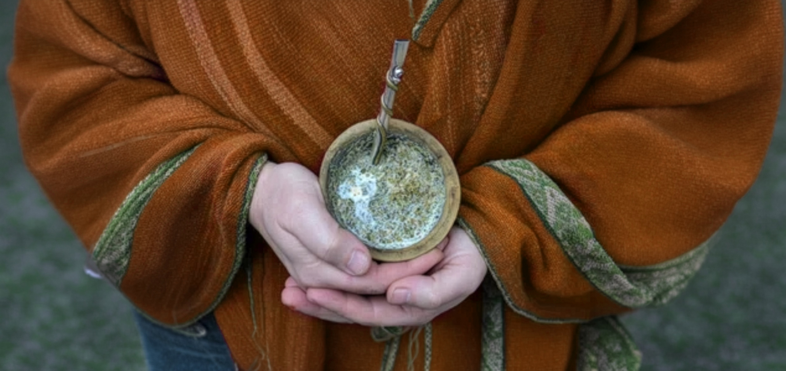
QUÉ ES PROYECTO RUAY
Es un movimiento colaborativo de bienestar, que representa a las personas que valoran lo auténtico, la conexión con la naturaleza y prefieren productos hechos de manera artesanal, que son concebidos manteniendo los procesos de aquellos que los crearon por primera vez.
Porque la naturaleza interior es pura y busca la misma pureza en la naturaleza que nos rodea.

Respetamos el lugar, la historia y los saberes que dieron vida a nuestra yerba.
Recuperamos procesos artesanales que honran el tiempo y la naturaleza.
Transformamos el consumo cotidiano en una experiencia de bienestar, conexión y presencia.
LA FÓRMULA DE ORIGEN
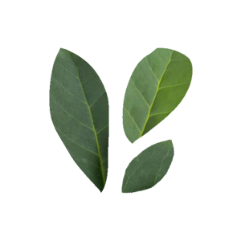
Elaborada exclusivamente con hojas de yerba mate, sin cortes ni agregados.
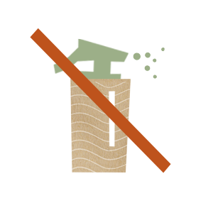
Cultivada con respeto por la naturaleza, para una yerba pura y saludable.
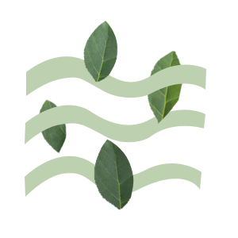
Secada naturalmente mediante el sistema de parrillas con calor indirecto de leña.
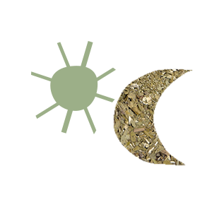
Un proceso artesanal y paciente que logra un sabor equilibrado, suave y sin acidez.
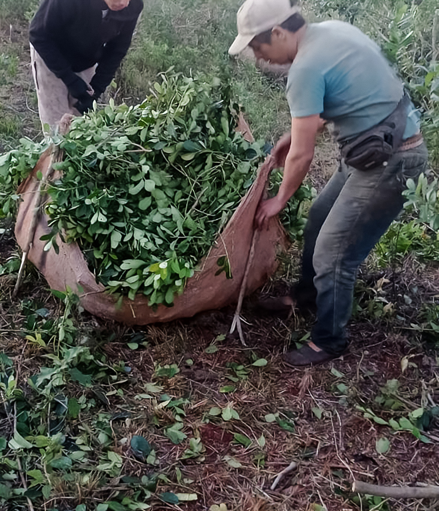
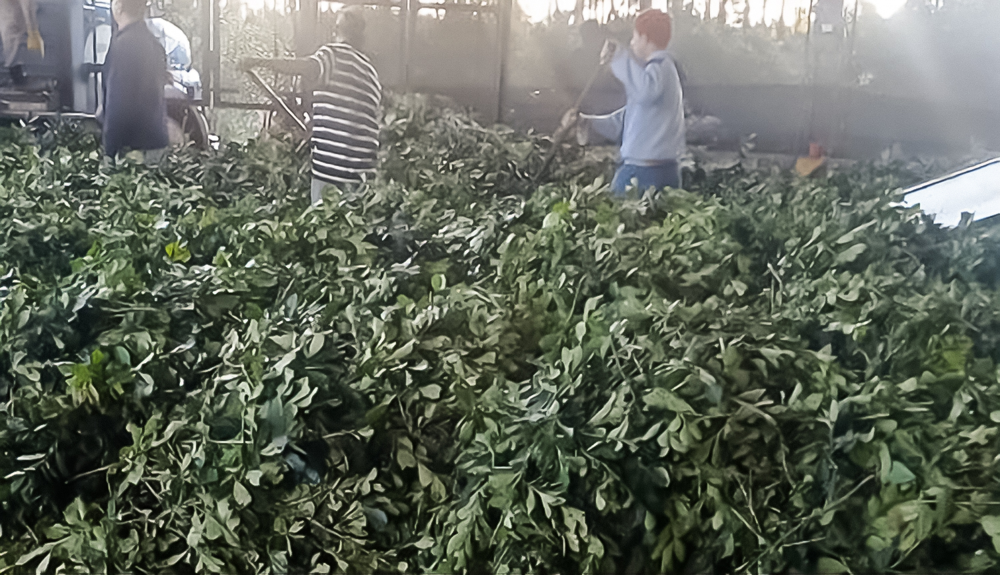
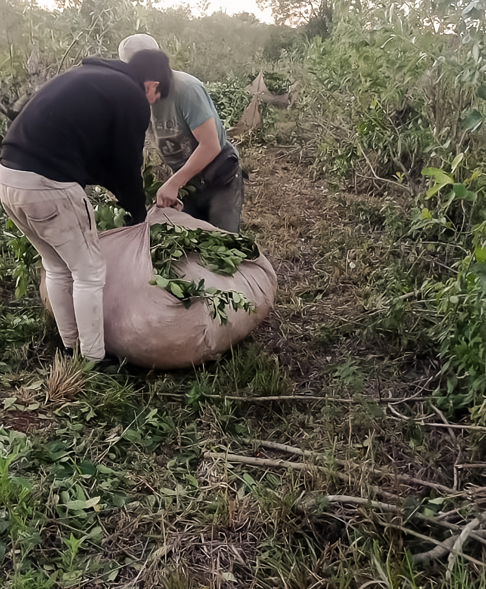
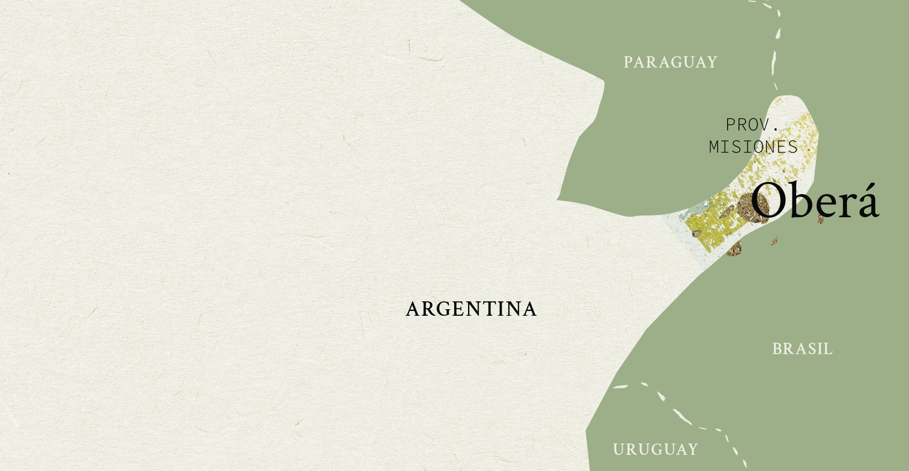
NUESTRO ORIGEN
Proyecto Ruay es una yerba mate artesanal nacida en Oberá, Misiones,
creada para quienes valoran lo auténtico, la conexión con la naturaleza y
los productos elaborados con respeto por su origen.
NUESTRAS VARIEDADES
No tienes que esperar para disfrutar de tu elixir nuevamente. Así es, porque somos los únicos que producimos grandes cantidades de yerba con este sistema natural, esto garantiza que puedas tener tu yerba preferida cuando lo necesites.
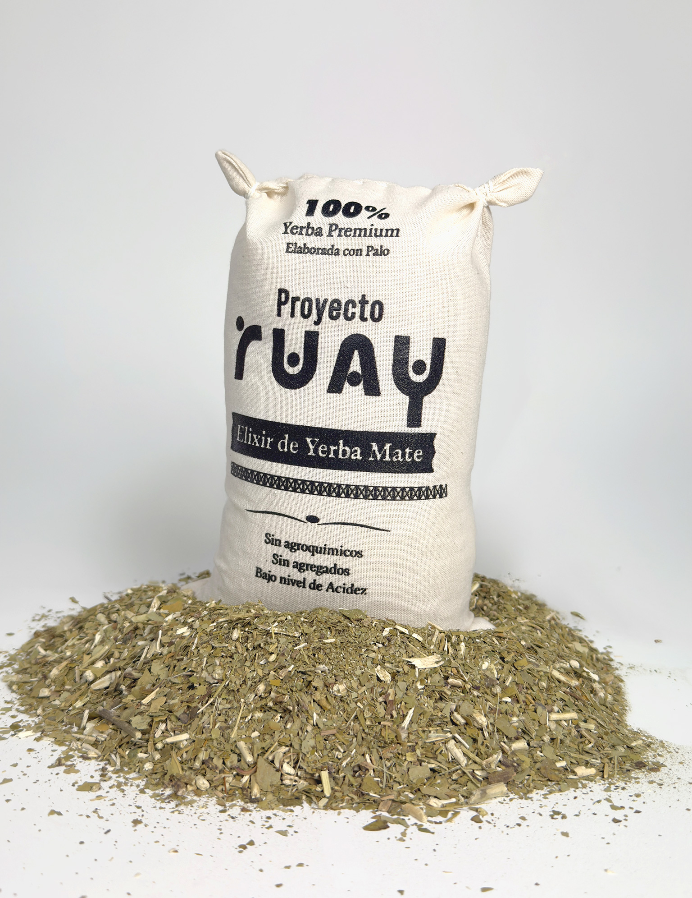
Molienda tradicional, con el equilibrio ideal entre hoja y palo. Sin polvo. Ofrece un mate suave, de excelente rendimiento y con un sabor persistente.
Compra por WhatsApp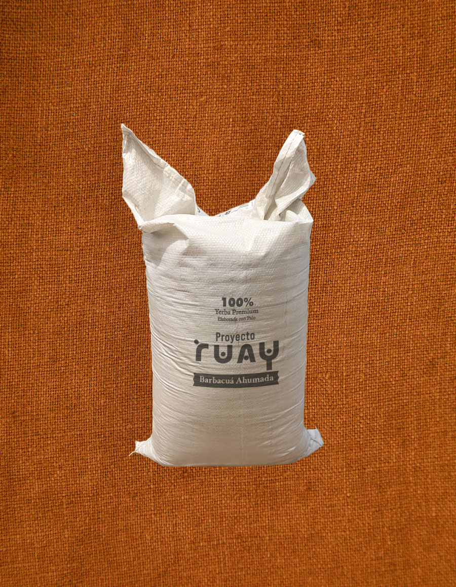
Incorpora un ahumado suave y cuidadosamente dosificado, que aporta delicadas notas aromáticas sin opacar el sabor natural de la yerba mate.
Compra por WhatsApp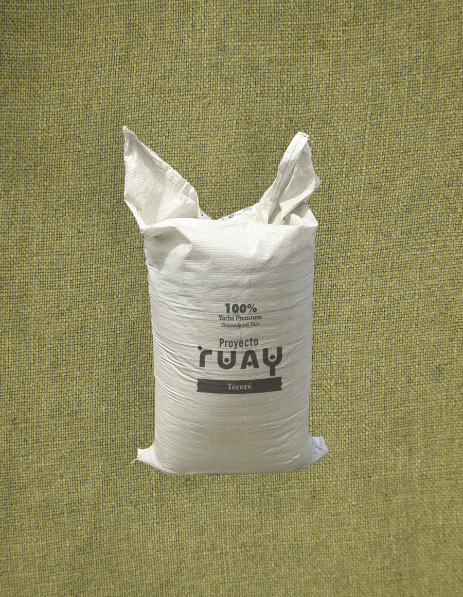
Molienda más gruesa, que permite conservar la intensidad y el sabor de la yerba incluso cuando se prepara con agua a menor temperatura.
Compra por WhatsAppDisfrutá una Yerba Mate auténtica, elaborada con respeto por el origen, la tierra y el tiempo.
CEREMONIAS
Nuestro objetivo es retomar esta tradición y volver a tomar el mate con la consciencia que lo hacían nuestros antepasados devolviéndole su carácter Sagrado.
Si te interesa, escribime por WhatsApp